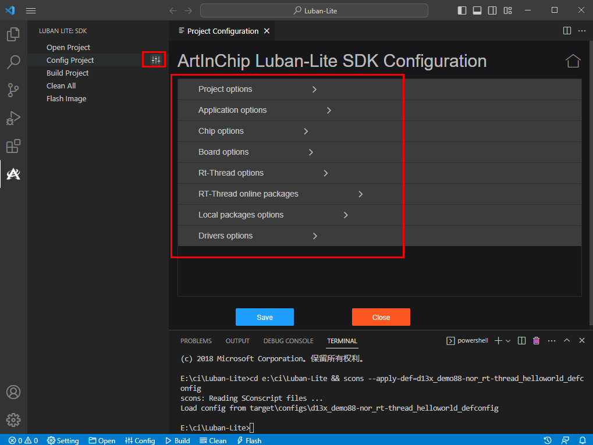

使用 Extension 工具
Luban-Lite VSCode Extension 是 ArtInChip 开发的一款用于快捷编译 SDK 的插件工具，方便用户使用界面选项方式开发 SDK。
安装插件
- 点此下载 LubanLite VSCode Extension 工具。
- 在 VSCode 终端界面，选择 。
- 在本地文件夹中，选中下载好的安装包，并完成安装。
插件配置
Luban-Lite VSCode Extension 插件支持下列配置：
- 将 Build 命令设置为当前快捷命令，表示每次编译操作都会编译 BootLoader + APP，与 "m" 快捷命令类似。
- 选择默认保存最小的 defconfig，或者全部配置内容的 defconfig。
- 设置编译的线程数量，默认值0，为根据系统资源自动分配线程数，可手工设置线程数。
打开 Luban Lite SDK 目录
- 在 VSCode 终端界面，选择
- 在弹出的窗口，选择 Luban-Lite SDK 文件夹并确认。
在打开一个文件夹时，VSCode 会自定识别是否为 Luban-Lite SDK。如是，插件会自动执行并且显示出对应的图标和按钮。
Luban Lite 仓库中部分工具没有可执行权限，无法从共享的目录中执行，因此通过 SAMBA 共享的 Linux Server 目录无法在 Windows 上直接打开使用。直接在 Windows 上 checkout 的仓库内容则不受此限制。
编译
- 在 Luban-Lite SDK 插件中，通过以下任意方式打开所有的默认配置文件：
- 点击侧边栏的 【Open Project】图标。
- 点击状态栏的 【Open】按钮。
在编译项目之前，需要先选择项目对应的默认配置文件 (defconfig)。
- 在选择界面中的所有可用的 defconfig 文件中，选择所需的配置文件并点击【Apply defconfig】应用配置。
双击对应的 defconfig 文件名也可以选择并应用对应的文件。如需取消项目选择，直接点击【Close】按钮关闭即可。
SDK 插件在右侧栏提供了一个关键字过滤功能界面。选择对应的关键字即可过滤 defconfig 列表中的文件。
- 通过下列任意方式可以进入 menuconfig 界面修改配置：
- 点击侧边栏的【Config Project】图标
- 点击状态栏的【Config】按钮
首次打开 Menuconfig 时，界面加载速度可能较慢，导致页面长时间停留在 “Loading Project Configuration ...”，需要耐心等待加载完成。加载速度与机器性能相关。
 - 修改完成后，须点击【Save】保存配置后再点击【Close】。注：
如果直接点击【Close】，相关修改并不会保存到当前项目的 .config 和 defconfig 中，导致配置修改丢失。
- 通过下列任意方式之一进行项目编译：
- 点击侧边栏的【Build Project】图标
- 点击状态栏的【Build】按钮
- 按【F7】快捷键触发编译
如需要在编译之前清理项目配置，则点击【Clean】执行清理工作。
注： SDK 支持在编译 APP 之前先编译对应的 BOOTLOADER，关于详细配置说明，可查看插件配置。
快捷烧录
执行下列步骤，可通过 USB 快捷烧录 SDK：
- 让板子进入 BROM 升级模式，同时确保 USB 线连接主机。
- 选择以下任意方式执行烧录：
- 点击侧边栏的【Flash Image】图标。
- 点击状态栏的【Flash】按钮。
- 按【F8】快捷键启动烧录。
对于分区烧录等其他烧录功能，需使用 AiBurn 烧录工具进行烧录。